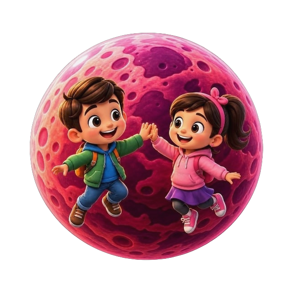
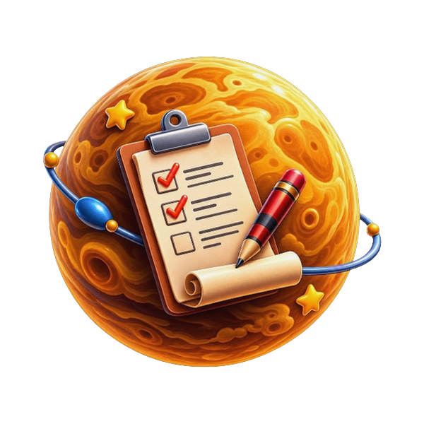

Kosmik ekotizim
Hayot uchun kerakli 8 ta eng muhim ko'nikma.
Har bir sayyora ularning yashirin salohiyatini ochishga yordam beradi

Merkuriy
Kasblar
Kelajak kasblarini kashf etish va maqsad qo'yish.

Venera
Virtual do'kon
O'z mehnati bilan topgan tangalarini to'g'ri sarflash.

Yer
Kognitiv ta'lim
Sokratik AI-ustoz bilan mustaqil fikrlashni o'rganish.
Mars
Jismoniy faollik
Ekrandan uzilib, real tana harakatlarini bajarish.

Yupiter
O'z-o'zini boshqarish
Kunlik reja tuzish va vaqtni to'g'ri taqsimlash.

Saturn
Matematika
Mantiqiy fikrlashni kuchaytiruvchi bosqichli masalalar.

Uran
Ingliz tili
Faol so'z boyligi va to'g'ri talaffuz amaliyoti.

Neptun
Emotsional savodxonlik
Kichkintoyning o'z hissiyotlarini tushunishi va boshqarishi.